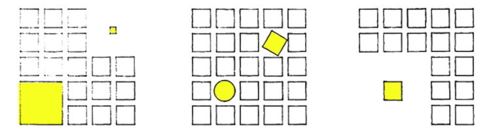

Luz y sombra
La luz y la sombra son herramientas muy utiles en la arquitectura. La luz y sombra entonces no sirve como un material de construccion, el cual al ser utilizado crea un ambiente que existe y no existe. La luz y la sombra dialogan con el ambiente tras la materialidad de la estructura y son la razon porque las obras arquitectonicas mas impresionantes son impresionantes.
Las obras arquitectonicas las percibimos por nuestros ojos, sin la percepcion ocular no podriamos experimentar el espacio de forma igual. Es por esto que la luz y la sombra llevan una importancia tan grande en la arquitectura. Definen los espacios creados y cuando son utilizados correctamente crean el ambiente de la obra arquitectonica. El codigo del dialogo es la materialidad de la obra siendo la luz la que rebota de las superficies y crea un canvas. La sombra es el pincel que el arquitecto usa para disennar el ambiente.
La arquitectura siendo un arte tridimensional, es clave el ser diestro en crear obras utilizando la luz y sombra. Especialmente ya que es un metodo con resultados fuertes e impactantes en proporcion a la movida necesaria para crear este. En contraste, crear una obra fisica y concreta en tres dimensiones puede tener resultados fuertes e impactantes pero requiere una movida mucho mas pesada y obvia que la luz y sombra. Es este concepto el cual refuerza la luz y sombra como la herramienta primordial de la arquitectura.
Sea la caja de herramientas que un arquitecto tiene a su disposicion, la luz y sombra ocupa nada de espacio. Ya que es casi imposible crear una obra sin involuntariamente forzar el uso de la luz y la sombra. Es un concepto que no requiere un lenguaje en comun, solo la vista.